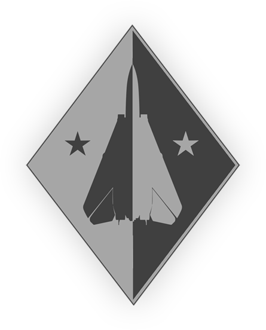

Heatblur DCS F-14 “雄猫”¶
DCS: F-14 中文飞行手册 网页版 本地化
已完成部分：
施工中： procedures.po / 进度 64%
参与人员：
- 红白 √
- 吃瓜 √
- zero √
- 北欧 √
- 午饭 √
- 学姐 √
- 煎蛋
- 汉魂~威龙
- 丫滑
分工： 粗略每人50条
- 开头到 ACM switch - OFF (guard down).
- If wings are not in OV SWP: 结束
- EMERG FLT HYD switch to AUTO(LOW),
- YAW STAB OP and OUT.
- After moving handle to 20° (full forward), engage spider detent.
- U/VHF MODE selector - OFF.
- This is done when pilot selects LTS test on MASTER TEST switch.
- DATA LINK - As required.
- 到结尾

内容：
- 简介
- 驾驶舱总览
- General Design and Systems Overview
- Engines and Throttle Controls
- Fuel System
- Fire Detection and Suppression System
- Electrical Power System
- Hydraulic System
- Wing-Sweep System
- Flight Control System
- Landing Gear System
- Catapult Launch and Arresting Gear
- ECS Environmental Control System
- Oxygen System
- Flight Instruments
- Canopy
- Ejection System
- Lighting System
- Jettison System
- CADC Central Air Data Computer
- AN/AWG-9 Weapon Control System (WCS)
- AN/APX-72 IFF Interrogator
- Television Camera Set (TCS)
- LANTIRN
- AN/ALR-67 RWR
- AN/ALE-39 Countermeasures Dispensing Set
- AN/ALQ-126 DECM
- Navigation
- Navigation System
- Inertial Navigation System (INS)
- INS Alignment Modes
- Navigational Controls and Displays
- Navigation Fix Update
- Attitude and Heading Reference Set (AHRS)
- TACAN System (AN/ARN-84)
- Bearing Distance and Heading Indicator (BDHI)
- Radar Altimeter System (AN/APN-194)
- Navigation System Integration
- Communications Systems
- Antennas
- ICS - Intercommunications System
- Audio Warning Signals
- Pilot Volume/TACAN Command Panel
- RIO Communication/TACAN Command Panel
- AN/ARC-159 (UHF 1) Radio
- AN/ARC-182 (V/UHF 2) Radio
- Loading (saving) Preset Channel(s) on UHF 1 and V/UHF 2
- AN/ARC-182 BIT (Built-in Test)
- AN/ARC-159 and AN/ARC-182 Remote Displays
- AN/ARA-50 UHF Automatic Direction Finder
- TSEC/KY-28 Voice Security Equipment
- KY-28 Operation
- Link 4A & C Data Link
- Weapons and Weapons Employment Overview
- 程序
- Emergency Procedures
- DCS Specific Functions
- Acronyms and Abbreviations